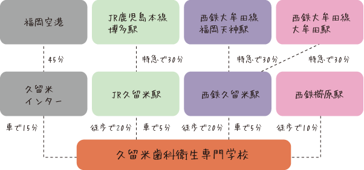

アクセス
ACCESS
〒830-0013福岡県久留米市櫛原町98
最寄駅から徒歩10分
天神・博多まで電車で30分です。

最寄駅・空港からのアクセス（図の内容）
- 福岡空港 → 久留米インター：45分 → 学校：車で15分
- JR鹿児島本線 博多駅 → JR久留米駅：特急で30分 → 学校：徒歩20分、車で5分
- 西鉄大牟田線 福岡（天神）駅 → 西鉄久留米駅：特急で30分 → 学校：徒歩20分、車で5分
- 西鉄大牟田線 大牟田駅 → 西鉄久留米駅：特急で30分
- 西鉄櫛原駅 → 学校：徒歩10分